Встреча в Констанце
Спасайся кто может: ФОТКИ без текста. :)
В середине октября мы с Сергей Анатольичем побросали куртки в рюкзаки да и махнули на пару дней в Констанц. Это маленький город на самом юге Германии, в двух шагах от Швейцарии. Прямо через город течёт река Рейн, и с двух сторон Констанц окружает огромное Боденское озеро (по размеру оно раз в десять больше города). В общем, место что надо — но самое главное это то, что там живёт Марина с Даниэлем и их маленькой дочкой Аней. Мы с Мариной не виделись уже тыщу лет — со времён их свадьбы.
На карте показан наш примерный маршрут. Вообще, нормальные люди полетели бы на самолёте до Цюриха, а оттуда поехали бы без пересадок до самого Констанца. Но мне давно хотелось проехать на поезде под Ла-Маншем, да и самолёты я терпеть не могу. Поэтому маршрут получился странный: колесим целый день по Европе, пересаживаясь с одного поезда на другой и выписывая замысловатые кренделя. Бывалый путешественник схватился бы за голову от такого числа стыковок и пересадок, но не мы с Сергей Анатольичем! Мы на всё смотрим с оптимизмом и твёрдой уверенностью, что где угодно на Земле поезда ходят лучше, чем в Лондоне.
План такой. 14-го октября встаём в 4 утра и шлёпаем на Ист-Кройдон. Оттуда едем на Панкрач (он же Saint Pancras International, один из главных вокзалов в Лондоне). Там садимся на Евростар до Парижа (отправление в 07:05). В Париж прибываем в 10:17 (намотав по дороге плюс один часовой поезд) и шляемся там до 14:55 — смотрим на башню или ещё что-нибудь. Из Парижа почти два часа едем в Страсбург (прибытие в 16:41). Там болтаемся сорок минут до 17:20 и едем получасовым поездом в Оффенбург, по дороге пересекая Рейн и попадая из Франции в Германию (прибытие в 17:52). В Оффенбурге быстро за восемь минут перебегаем на другую платформу и наконец ловим последний двух-с-четвертью-часовой поезд до Констанца (прибытие в 20:16). Назад через четыре дня примерно таким же макаром, только в обратном порядке.
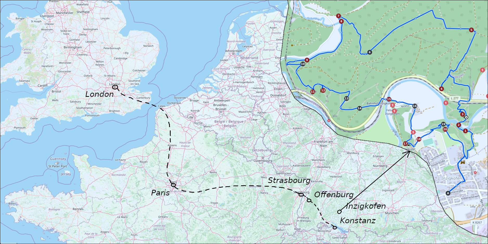
14-е октября
Ночной Кройдон встретил нас фонарями, пустынными улицами и немногочисленными людьми на станции. Поезд пришёл заранее и минут пять стоял, как будто водитель решил немного поспать. На Панкрач мы приехали без приключений и быстро прошли паспортный контроль. Потом ещё час сидели в набитом зале ожидания, клевали носом над стаканом кофе и купленным на будущее треугольным бутербродом. Есть не хотелось абсолютно, но поезд до Парижа идёт долго, а мы не взяли с собой вообще никакой еды.
Наконец объявили посадку, и мы всей толпой хлынули на платформу. В вагоне было прохладновато — видимо, работал кондиционер. Почти сразу мы заехали в туннель и заснули. Проснулись уже во Франции — рассвело, и в окне мелькало серое небо, поля и указатели на французском языке. В ход пошёл треугольный бутер с рыбой (правда, запить его было нечем).
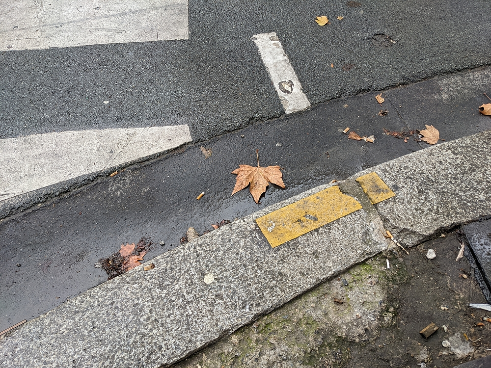
Париж начался в окне поезда с розовато-серых домов и железнодорожных арок. Сразу стало ясно, что это город граффити: они тут были повсюду, и чувствовалась какая-то школа и рука мастера. Улица бросилась в лицо усиливающимся дождём и мокрым асфальтом. У меня был план дойти до Эйфелевой башни и назад: пешкодралом туда от вокзала Gare du Nord полтора-два часа, а потом ещё столько же обратно до Gare de l’Est, откуда идёт поезд на Страсбург (эти два вокзала в пяти минутах ходьбы).
Первым делом в городе мы чуть не поскользнулись на мокром чёрном асфальте. Парижане моют тротуар: ездит машина с водой и прямо поливает его из шланга. Дождь и не думал переставать, но на ходу мы быстро разогрелись и даже взмокли — пришлось снимать кофты, подворачивать штаны и закатывать носки. Хорошо, что взяли непромокаемые лёгкие куртки и дождевики для рюкзаков, можно было не обращать внимания на дождь. Каждые пару минут мы останавливались на светофоре, и мне запомнилась необычная фигурка зелёного человека, которая тут на всех светофорах: как бы идущая, в движении и полубоком.
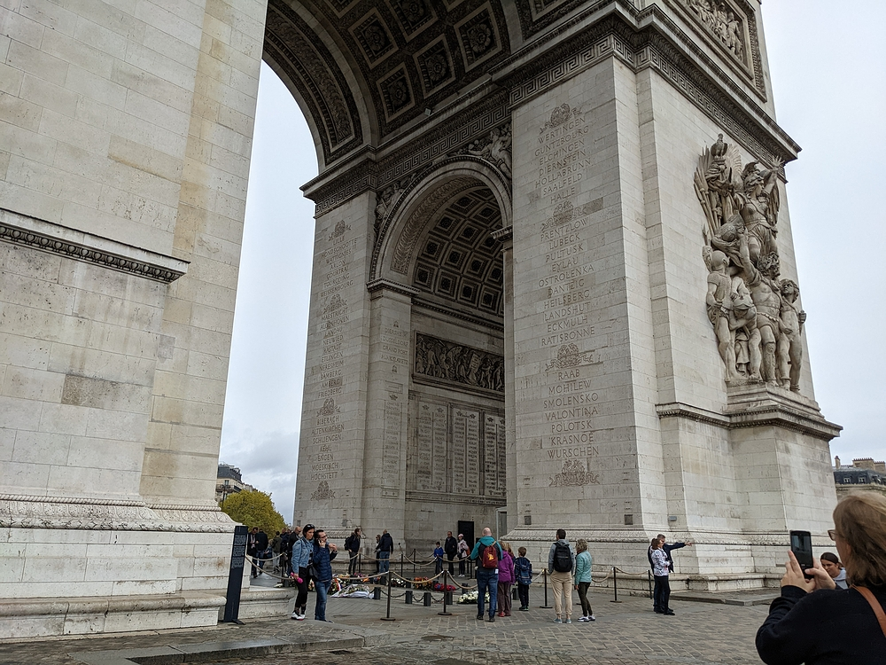
Часа через два мы дошли до знаменитой Триумфальной арки. Здесь было много туристов и гуляющих людей, несмотря на унылую погоду. Арка красивая, особенно если стоять прямо под ней и смотреть снизу. Мы шли быстро и особо не задерживались — непонятно было, сколько займёт обратная дорога.
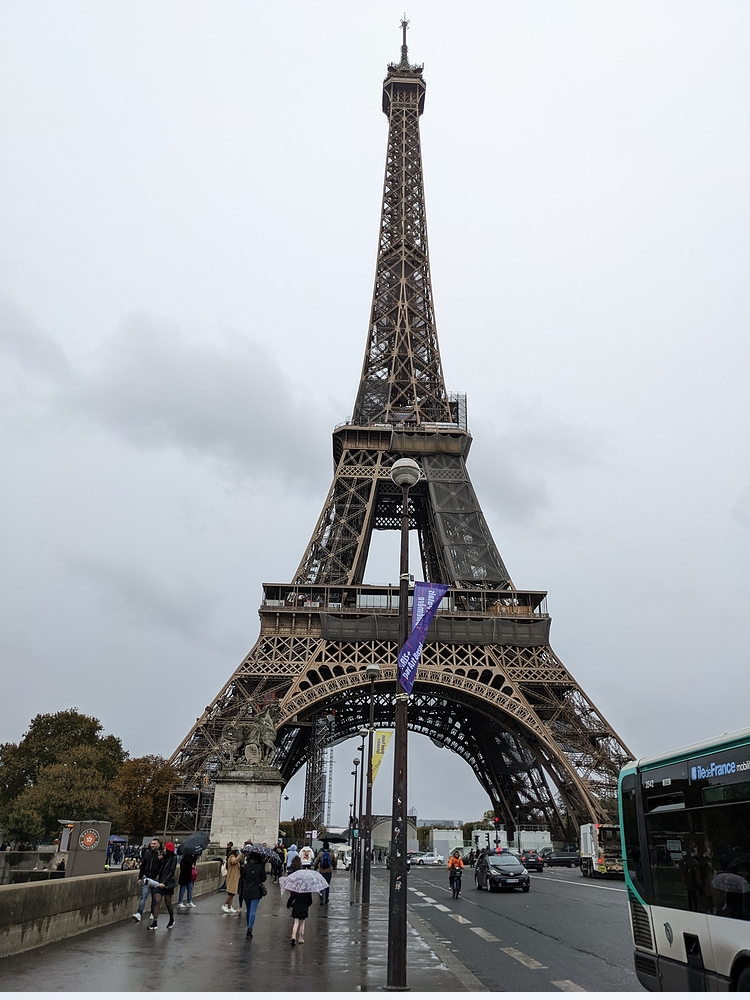
После арки пошли к Эйфелевой башне. Тоже красивая, особенно неплохой вид с моста. На обратном пути шли вдоль Сены, а потом опять по длинной улице с бесконечными светофорами и пешеходными переходами. Очень взмокли и устали — намотали километров пятнадцать. Дождь немного перестал, но на подходе к вокзалу опять усилился. Мы пришли где-то за час до поезда и пошли искать, где бы упасть. Наконец нашли какой-то Старбакс: взяли там кофе, воду, апельсиновый сок и бутеры (они были классные, разогретые в микроволновке). Немного посидели, перевели дух и подождали поезда. Стало опять холодно.
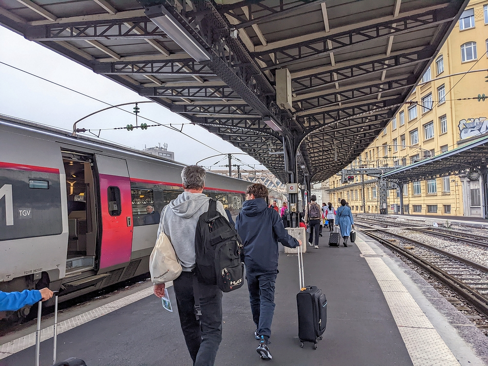
Где-то без четверти два началась посадка. Очень странно: платформу ненадолго показали на табло, а потом она куда-то пропала — повезло, что мы успели заметить. Пока шли до вагона, навес закончился и пошёл проливной дождь, так что в вагон мы запрыгивали в спешке. Там была какая-то неразбериха с сиденьями: сначала на наши места сели люди, у которых в билете значились несуществующие места. Потом всё как-то уладилось — видно, люди ушли в соседний вагон. В поезде было жарко. Напротив нас села мама с маленьким ребёнком, которая одновременно пыталась за ним уследить, поесть и ответить кому-то в телефоне. Потом ребёнок на время исчез, и мама всё-таки успела поесть. Потом маму сменил отец семейства, который спал в неудобной позе, загнув голову и скрючившись на сиденье. Нас и самих валило спать: разморило от теплоты, а за окном мелькали бесконечные поля под мутным дождевым небом.
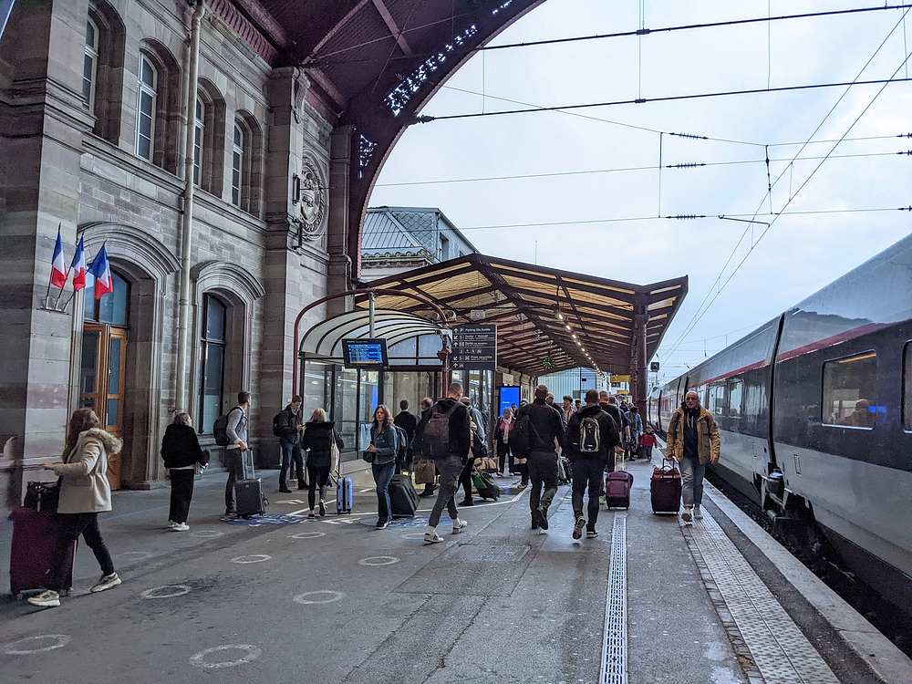
Вытряхнулись в Страсбурге (это всё ещё Франция). Тут тоже шёл дождь, но небо показалось как-то выше и светлее. У нас оставалось минут сорок до следующего поезда, и надо было затариться едой на будущее. Есть пока не хотелось, но пересадка в Оффенбурге короткая, и до самого Констанца еды уже достать негде.
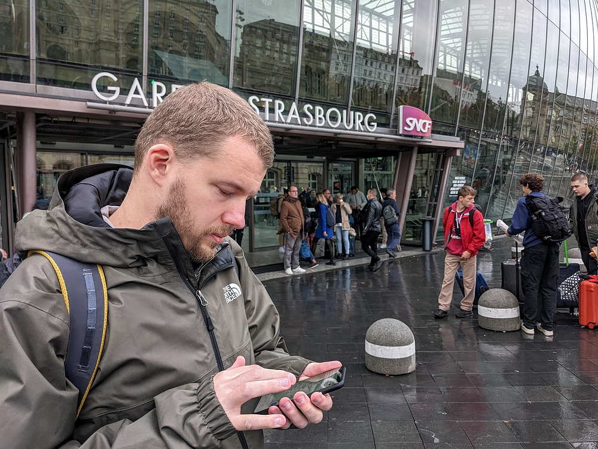
Сергей Анатольич загуглил ближайший пищевой магаз, но идти туда уже не было времени. В конце концов мы вернулись на вокзал и зашли там в какой-то мелкий магаз: взяли три яблока, кофе, воду и апельсиновый сок (ну и ещё я схватила в спешке какие-то два фруктовых батончика на кассе). Девушка была очень добрая и помыла нам яблоки, чтобы можно было их сразу есть. Всё это сложили в бумажный пакет с надписью Monoprix (учитывая, что это французы, никакой это не Моноприкс — x не читается).
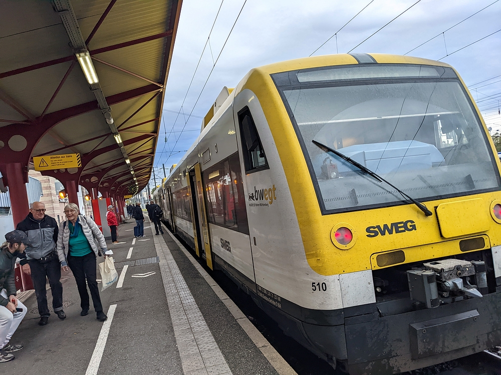
Тем временем до поезда осталось совсем мало, и мы полубегом рванули искать платформу. Какая-то ерунда: вроде как выбрались из перехода по указателям, а сверху оказалась совсем другая платформа. Добрый работник станции показал нам дорогу: оказывается, платформа 25 немного на отшибе, в самом конце платформы 1. Мы успели как раз вовремя: там уже стоял ярко-жёлтый короткий поезд до Оффенбурга.
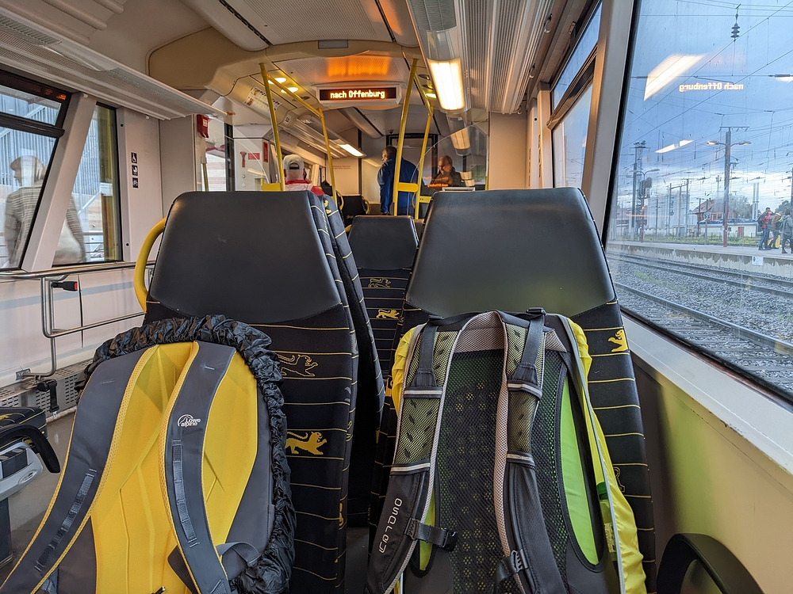
Поезд оказался классным: во-первых, упругие чёрно-жёлтые сиденья, а во-вторых косые треугольные балки на окнах. На табло надпись по-немецки: nach Offenburg (до Оффенбурга). Немецкий, в отличие от французского, я немного понимаю. Мы сели, где захотели: свободных мест было много. Незаметно поезд тронулся и поехал. Я сёрбала кофе (он оказался очень хорошим) и смотрела в окно на Рейн — мы переехали границу и попали в Германию.
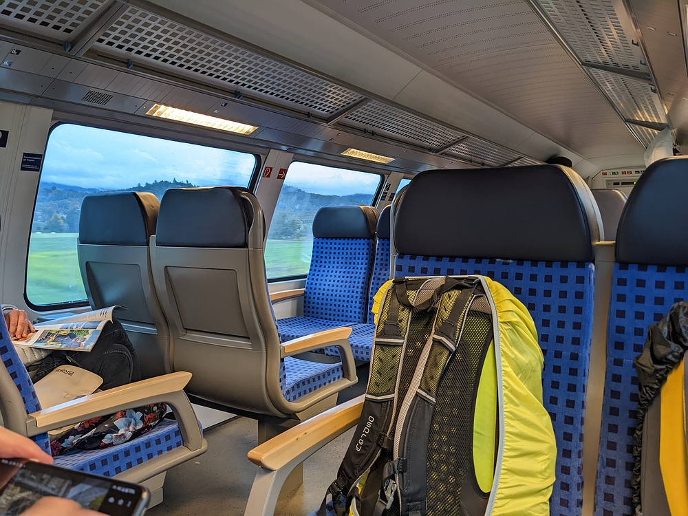
В Оффенбурге мы собрали руки в ноги и бегом рванули на соседнюю платформу. Опаздывали минут на пять, но к счастью поезд до Констанца тоже немного опоздал. Он оказался ещё лучше предыдущего: двухэтажный и просторный. Мы залезли на второй этаж: сначала там было нечем дышать, но потом врубили кондиционер и стало совсем хорошо. Народу было мало. Мы слушали объявления не немецком, ели яблоки и пили апельсиновый сок. Я смотрела в окно, а Сергей Анатольевич читал.
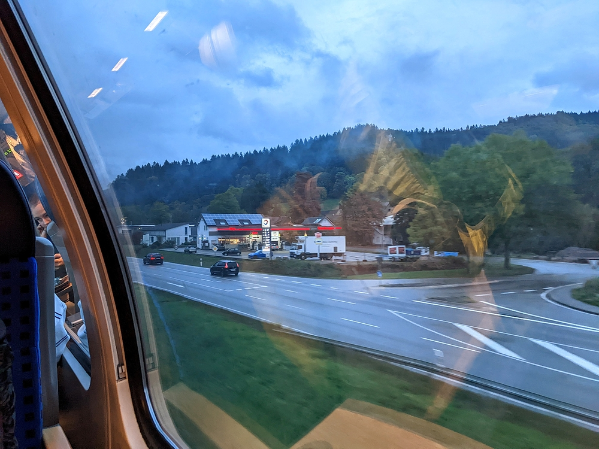
Потиху темнело. За окном мелькали картины невиданной красоты: низкие облака, похожие на вату, застряли между покрытыми лесом холмами. Потом автомобильная дорога шла совсем рядом с поездом, и казалось, что мы едем в потоке машин. Потом вообще пошли какие-то безумные горки, покрытые соснами, и маленькие поселения внизу: поезд шёл над обрывом, то и дело ныряя в туннель в горе. Фоткать всё это не было никакой возможности: стало совсем темно, и на фотке отражались только наши рюкзаки на сиденье напротив.
Остановки объявляли примерно так: nächste Station — Triberg [нэкстэ штацьён — Триберг], то бишь следующая станция — Триберг. А на табло было написано nächste Halt [нэкстэ хальт], следующая остановка. Ещё каждый раз добавляли, что выход справа по ходу движения: Ausfahrt in Fahrtrichtung rechts [аусфарт им фартрихьтунг рехьтс]. А если слева, тогда не rechts, а links. С большего всё понятно, спасибо нашей немке из 87-й! Сергей Анатольич вроде тоже всё понимал, хоть у него немки и не было.
В соседний отсек подсела компания совсем зелёных пареньков, скорее всего школьников. Они громко смеялись и смотрели какие-то ролики с телефона, а потом стали спрашивать что-то у Сергей Анатольича, показывая на нос. Мы сначала подумали, что это какая-то шутка — но потом стало ясно, что они просили бумажную салфетку, чтобы высморкаться. Это пожалуйста, хоть две. Они плоховато понимали по-английски — удивились, что мы не говорим по-немецки. Но детвора в целом вежливая, приличная.
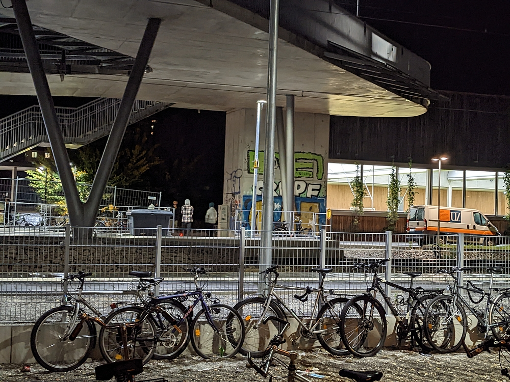
В Констанц мы приехали, когда было уже окончательно и бесповоротно темно (примерно в четверть девятого). Снова шёл дождь, красиво подсвеченный квадратными фонарями. Мы перешли железную дорогу по бетонным извилистым петлям. Внизу веселилась какая-то русскоязычная компания. Сергей Анатольич проложил маршрут до хатки — минут двадцать пять ходьбы — и мы направились в город.
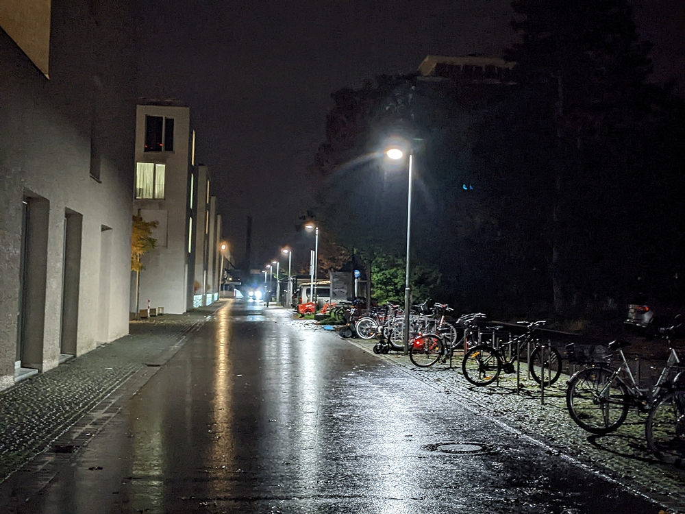
Было тепло, несмотря на дождь и темное время суток. Мы решили сначала зайти в дом (хотя бы удостовериться, что это у нас получится), а потом пойти поискать магаз с едой.
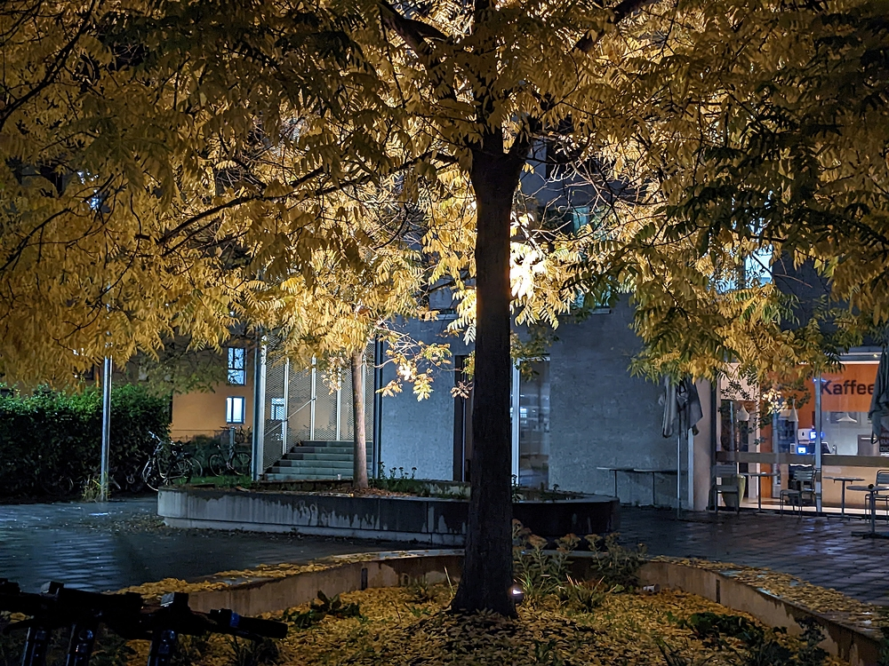
По дороге со станции встретилось золотистое дерево с фонарём. Мы шли по обычным спальным кварталам, похожим на минские дворы — только ещё более аккуратные и с меньшей этажностью. Изредка проходили закрытые на ночь магазы. Потом перешли какую-то более оживлённую дорогу и свернули за пабом, где под навесом сидел человек у костра. Дальше пошли более тёмные кварталы, похожие на дачи или городской частный сектор. Шли мы по ним не очень долго, и вышли в районе улиц с фонарями и коттеджами. Тут уже было рукой подать до нашего дома: Bärlappweg 22.
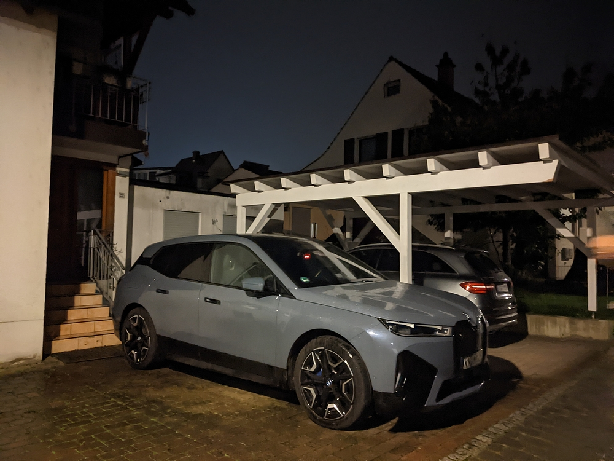
Хозяин дома Фабиан прислал мне инструкцию, как найти ключи: где-то слева сзади от автостоянки должен был быть ящик, открывающийся по коду. Всего-то делов: взять ключи из ящика. Но вот беда — никакого ящика мы не увидели. Ни с первого, ни со второго раза. Стоянка — вот она, пожалуйста, а ящика нет. В конце концов мы полезли в калитку с надписью “осторожно, злая собака” — дождь ещё припустил, и нам малость надоело нарезать круги возле дома. Впрочем, это не помогло: собаки там не было, но и ящика тоже не было. Я написала Фабиану, и как раз в это время позвонила Марина — она сказала не ждать под дождём, а просто начать ломиться в дверь. Так мы и сделали. Дверь открыл сам Фабиан: оказалось, ящик был вовсе не ящик, а маленькая чёрная коробка, сантиметров десять в длину и пять в ширину, прибитая к задней стороне столба. А ещё оказалось, что в инструкциях на сайте была подробная фотка — но кто ж на них кликает. :D
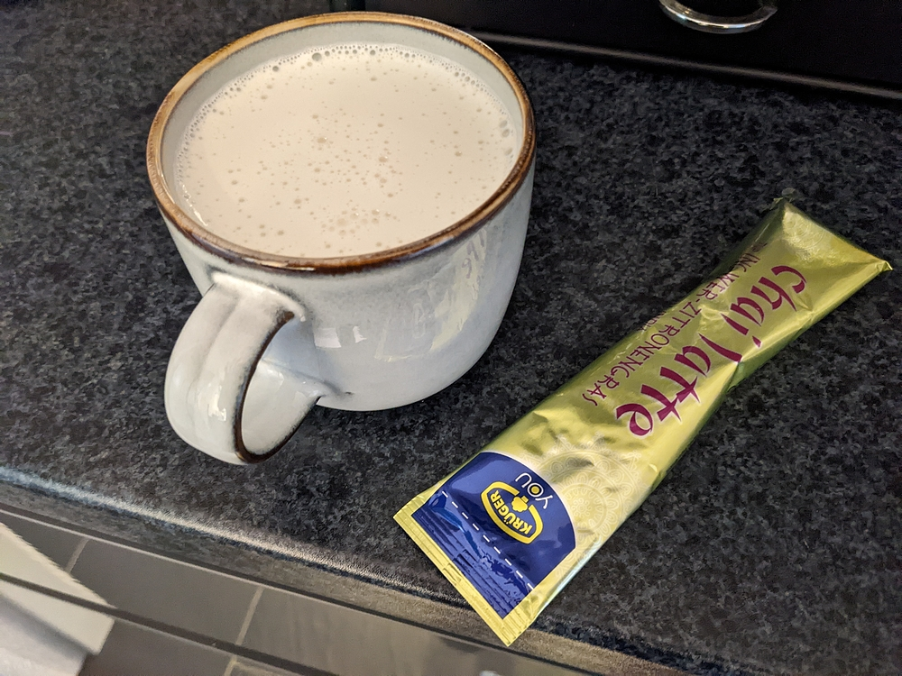
Фабиан нам всё показал и ушёл в свою часть дома. Ещё он сказал, что для магазов уже слишком поздно — они все закрыты. Мы подозревали что-то подобное, но всё же была надежда на вечер пятницы. Фабиан оставил нам телефон с доставкой пиццы, но у нас с собой не было бумажных денег. Ну и ладно, перебьёмся уж как-нибудь: у нас ещё осталось одно яблоко и два фруктовых батончика. Пошарив в кухонном шкафу, я нашла ещё чай, коробку сахара и какое-то очень занятное пойло: вроде как сухое молоко со слабым привкусом чая и имбиря. Оно понравилось нам обоим — одним пакетом можно нехило наесться. Так что даже коробка сахара не понадобилась.
15-е октября
Утром было опять пасмурно, но без дождя. Мы проснулись около восьми, а на десять договорились идти к Марине. Вот наша хатка в утреннем свете.
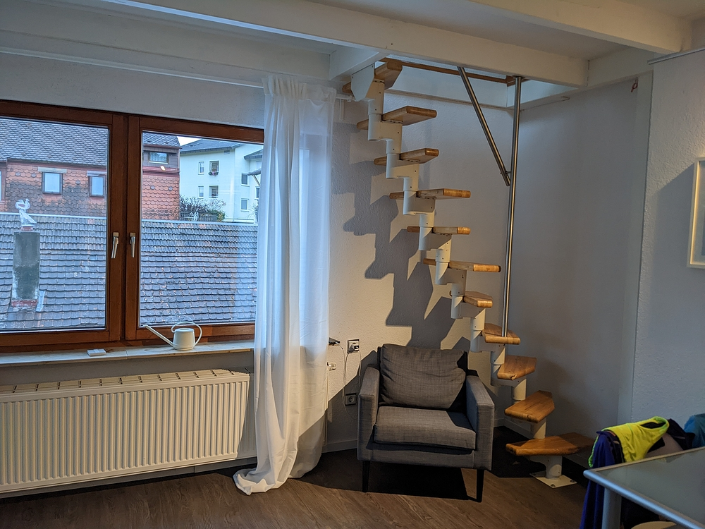
Основная комната, кухня, ванная и балкон на втором этаже, а деревянная лестница ведёт на чердак.
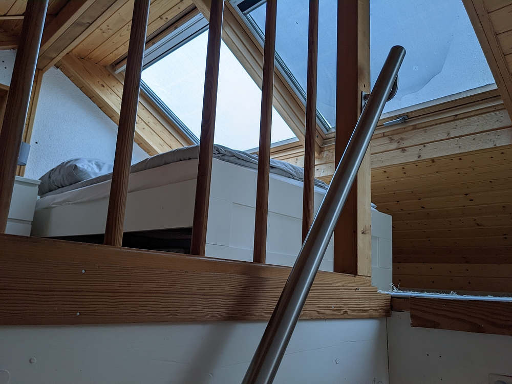
На чердаке спальня и окна в крыше. Очень классное место — можно ночью смотреть на звезды, или вообще вылезти на крышу. Ещё лучше было бы спать просто на полу.
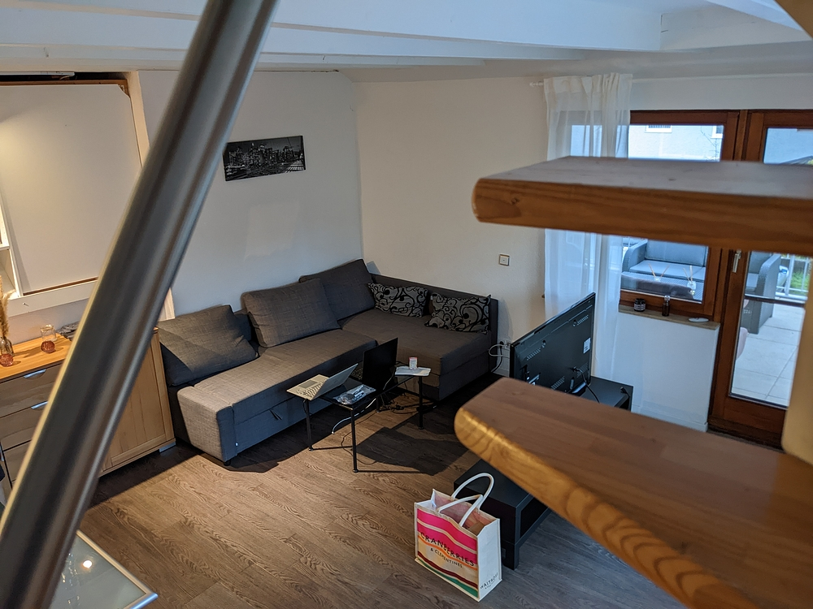
В зале много места и здоровенный квадратный балкон под навесом. Вообще, всё квадратное: комната, окна, балкон, плитка на балконе, прихожая, автостоянка, раковина, ручка от душа в ванне. Мне эта квадратность очень нравится — по-моему, самая правильная форма. Я бы ещё ящик для ключей квадратным сделала. :)
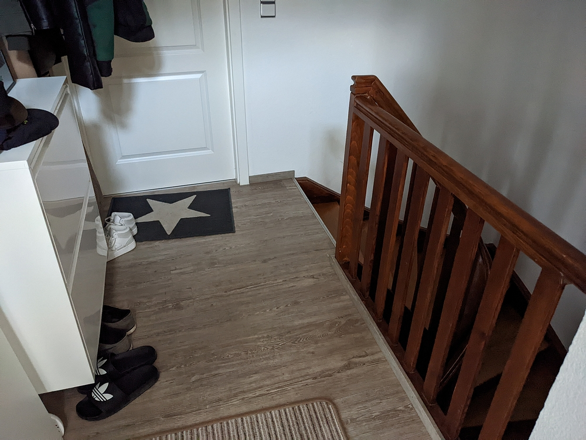
Вид от нашей внутренней входной двери на дверь напротив (подозреваю, там ещё одни апартаменты для гостей) и лестницу на первый этаж.

Вид с крыльца нашего дома на дом через дорогу. Слева на белом столбе — коробка для ключей, которую мы так не смогли опознать вчера ночью.
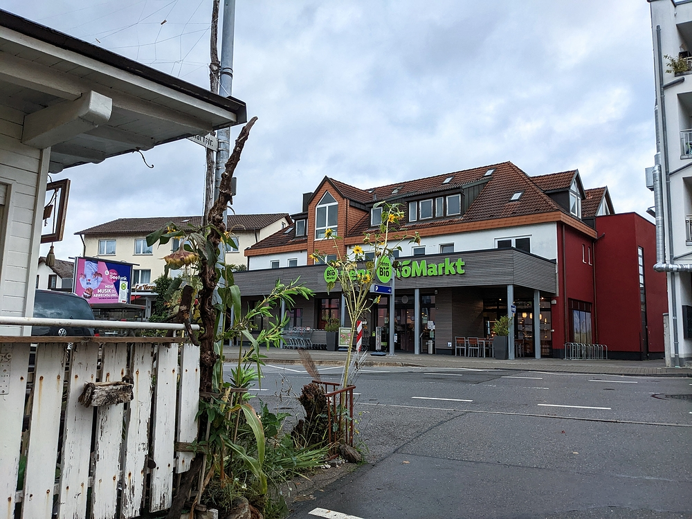
От Барлаппвег до Штайнхартштрассе всего десять минут, но мы вышли заранее, чтобы идти не спеша и всё рассматривать. По пути перешли две более-менее оживлённые дороги и один продуктовый магаз BioMarkt (он совсем рядом с Марининым домом). Напротив него какая-то любопытная хижина с подсолнухами и деревянным котом.
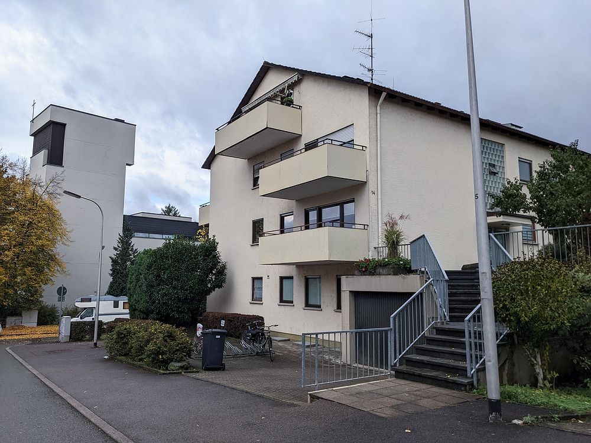
А вот и Маринин дом. Они живут на верхнем этаже, окнами во внутренний двор.
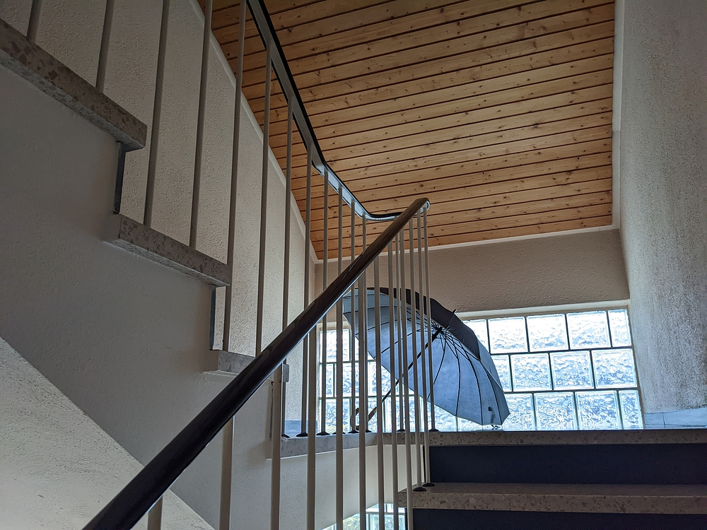
Маринин подъезд и зонт. На стене Сергей Анатольич обнаружил клопа в состоянии анабиоза, и каждый день проверял, на месте ли он.
Дверь нам открыла Марина. Ура!!! Произошла встреча старых друзей. Даниэля с Аней пока не было — они пошли в магаз. Марина знала, что мы с трудом продержались до утра без еды, и сразу позвала нас на завтрак. Правда, я не упоминала, что мы ударными дозами бадяжили чай-латте и закидывались фруктовыми батонами. :D
Вскоре пришли Даниэль с Аней. Это была наша первая встреча с Аней, и я немного переживала, не напугаем ли мы её. Она тихий, улыбчивый ребёнок. Сначала спряталась за Марину, но потом понемногу привыкла. Она говорит по-немецки (уже довольно много слов знает) и немного понимает по-русски, но мы-то дураки всё время инстинктивно пытались говорить с ней по-английски. В конце концов Аня научила меня паре немецких слов, вроде Auge (глаз) и Maus (мышь). Так и общались!
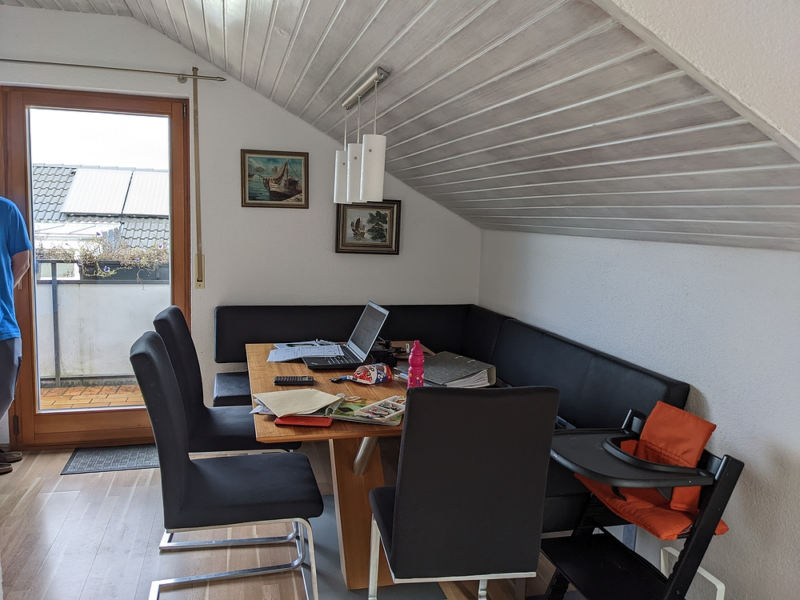
Мы все вместе сели завтракать за вот этим столом — у Марины классная кухня со скошенным потолком и квадратными окнами в крыше. На завтрак было сто видов сухой колбасы, ветчины, сушёного мяса, сыр с картинками, разогретый в духовке хлеб, претцели (это такие немецкие кренделя с тёмной загорелой коркой, посыпанные солью — похожи на наши бублики по вкусу). Ну и конечно всякие огурцы, помидоры, яблоки и кофе. Аня ела мало, но вкусы у нас с ней сошлись: из всех видов колбасы я тоже люблю салями.
Потом мы на полдня пошли гулять в лес: там неподалёку огромный лес, и можно колесить по нему с коляской сколько душа пожелает. Повезло, что Аня заснула — а то пришлось бы возвращаться домой. Даниэль с Сергей Анатольичем шли немного впереди и катили коляску, а мы с Мариной шли сзади и разговаривали обо всём. Было очень классно.
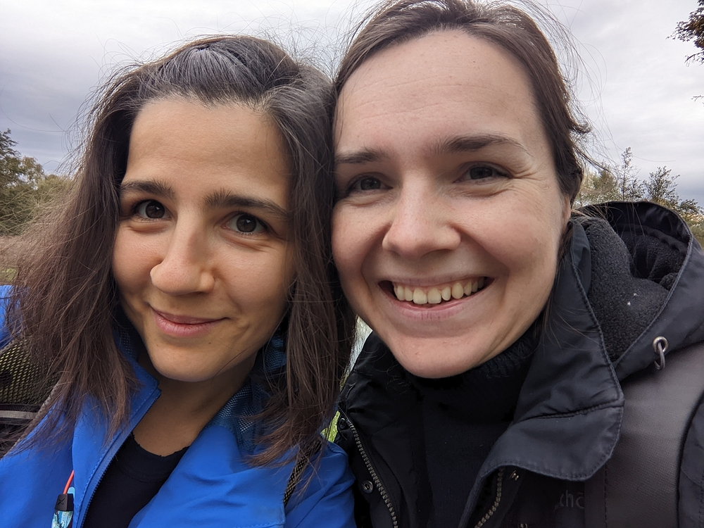
Вот наши радостные лица. \o/
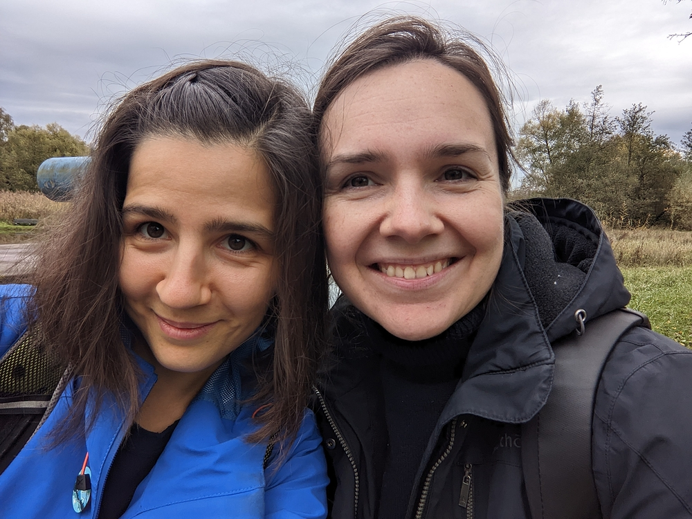
А вот ещё одни радостные лица, потому что я так и не определилась, какая фотка мне больше нравится.
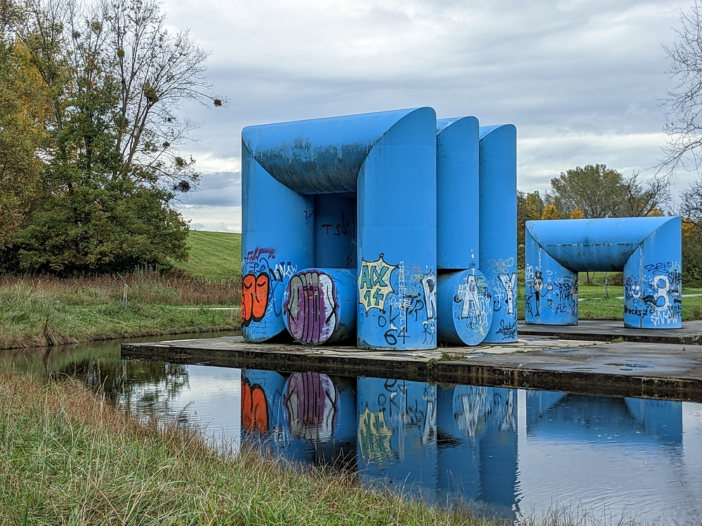
По дороге мы проходили красивые синие трубы на зеркальном пруду, размалёванные граффити. Марина сказала, что это часть индустриального дизайна.
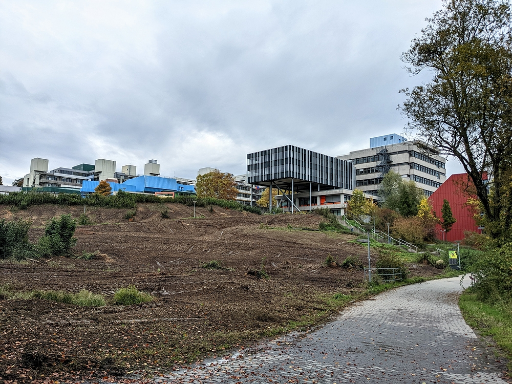
А вот и Маринин универ, в который она приехала учиться из Беларуси (лет десять назад). Универ в том же индустриальном духе, что и синие трубы.
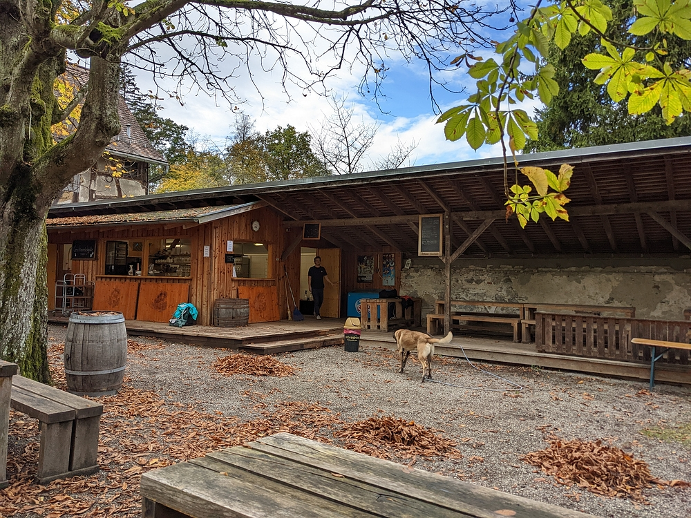
Несколько часов мы петляли по осеннему лесу, а потом вышли к старому разрушенному дому за каменным забором. Марина с Даниэлем рассказывали, что это за дом, но я всё пропустила мимо ушей — кажется, заброшенный монастырь. Там теперь никто не живёт, но оборудовали классное место, чтобы отдохнуть: каштановая роща, и под деревьями много дощатых лавок и скамеек. Со стороны дома деревянная пристройка, где продаётся пиво, кофе, разведённое сухое вино с водой и очень классное местное питьё Apfelschorle [апфельшорле] — это такой разбадяженный яблочный сок с газировкой. Ещё жареные сосиски с хлебом и горчицей. Рядом с пристройкой на цепи большая дружелюбная собака.

Около пристройки помост под навесом — можно там укрыться во время дождя. Даниэль купил нам еды, и мы пошли сидеть на лавках под каштанами и говорить дальше. Аня как раз проснулась и играла поблизости. Вообще, там рядом нехилая детская площадка для детей чуть постарше: какие-то лазилки, качели. Для родителей есть мангал, где можно развести костёр. Когда мы пришли, почти никого не было, но потом распогодилось и пришло много народу: все они бегали, играли и жарили что-то на костре.
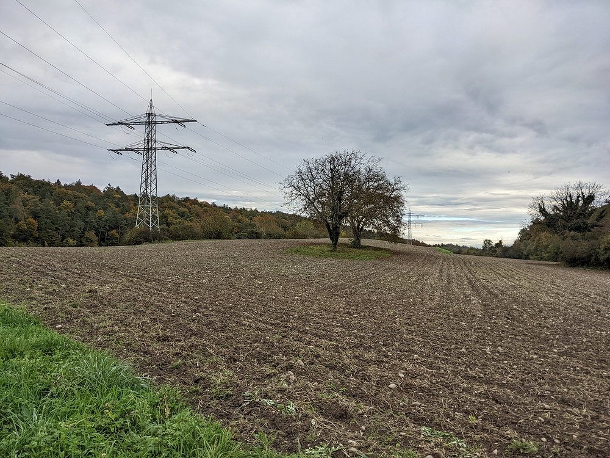
Потом на обратном пути возвращались в город через поле (пейзаж совсем как из-под Жодино). Откуда-то с участков тянуло слабым запахом костров и горящих листьев.
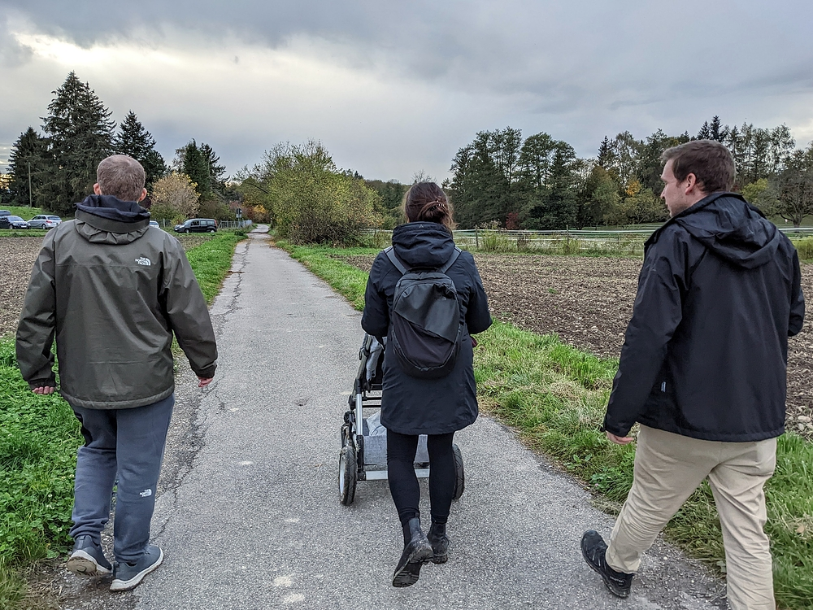
Сергей Анатольич, Марина с невидимой Аней и Даниэль. Вид сзади (чтоб никто не испугался, что их фоткают).
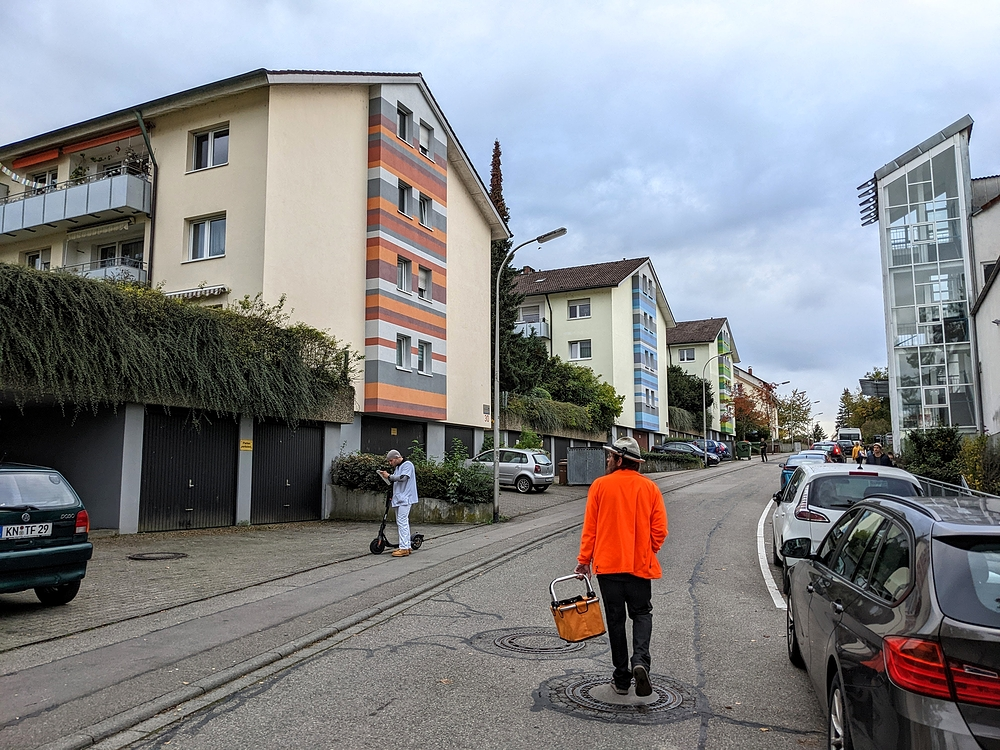
Дело было уже к вечеру. Решили, что мы с Сергей Анатольичем зайдём в магаз — а то если не успеть до вечера субботы, то они тут по воскресеньям вообще закрыты. Потом отнесём еду к нам на хатку, а часам к восьми пойдём к Марине на ужин. На фотке человек в рыжей байке и шляпе, которого я потом видела неподалёку от нашего дома.
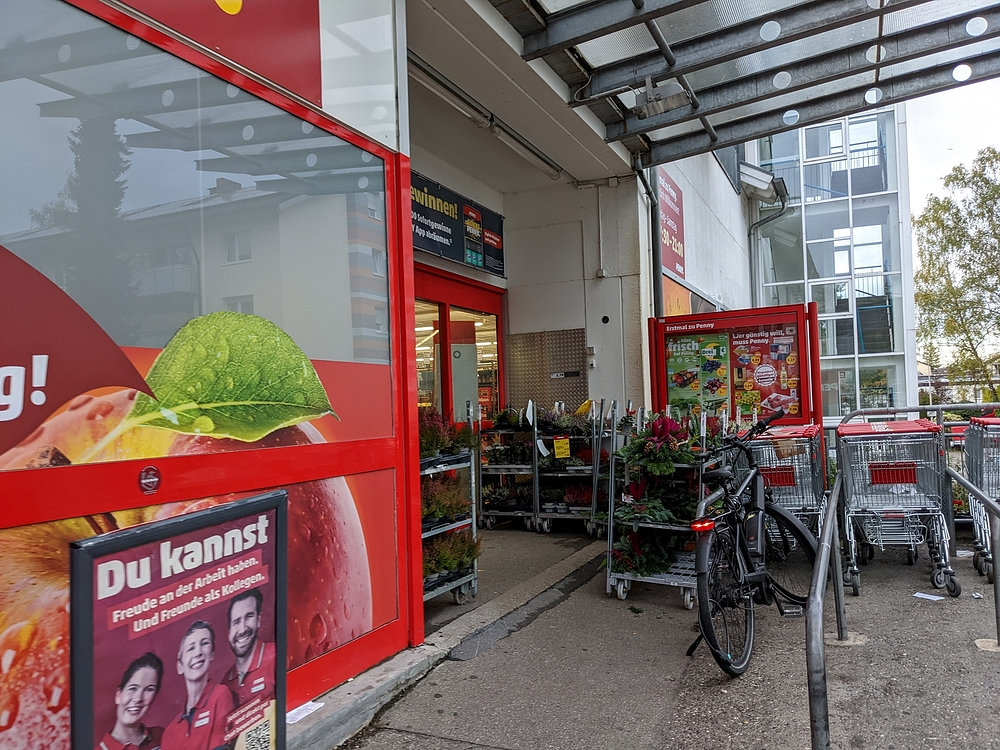
Марина показала нам большой и недорогой магаз Penny, и мы пошли изучать, как тут у немцев с едой. Люблю шляться по большим продуктовым магазам, особенно в незнакомой стране. Мы набрали много всего: яблоки, апфельшорле, хлеб, сыр, сушёную колбасу, марципан, шампунь, туалетную бумагу и тапки (есть у меня какая-то слабость к тапкам, не могу равнодушно пройти мимо). Всё это действительно стоило недорого, примерно как наш вчерашний старбаксовский перекус на Gare de l’Est.
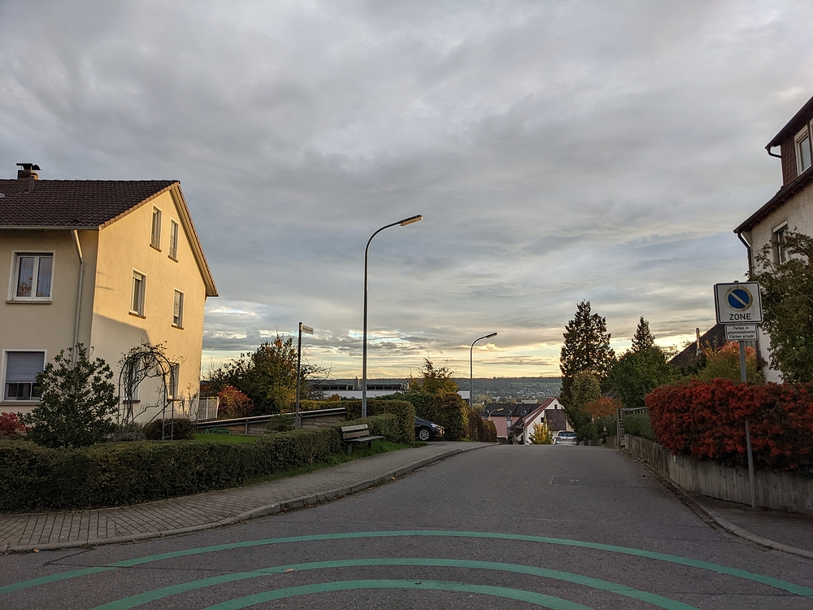
По дороге наблюдали вид с горы на город и озеро в лучах вечернего солнца. На асфальте зелёные круги — такую разметку мы видели только в Констанце.
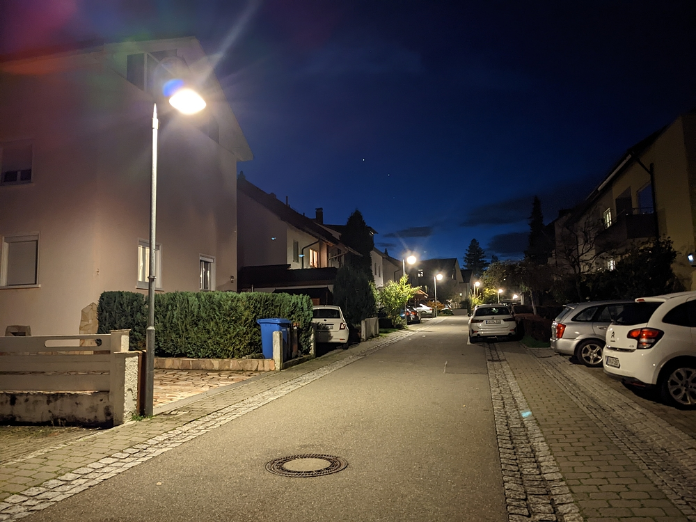
Без четверти восемь выдвинулись на Штайнхартштрассе. Наступила ночь, загорелись фонари и вокруг стало ещё красивее. Мы шли по ночному Констанцу, то и дело задирая голову вверх на звёздное небо: облака совсем разошлись, и стали видны десятки созвездий и бессчётное множество звёзд. Констанц город маленький, и засветки тут почти нет.
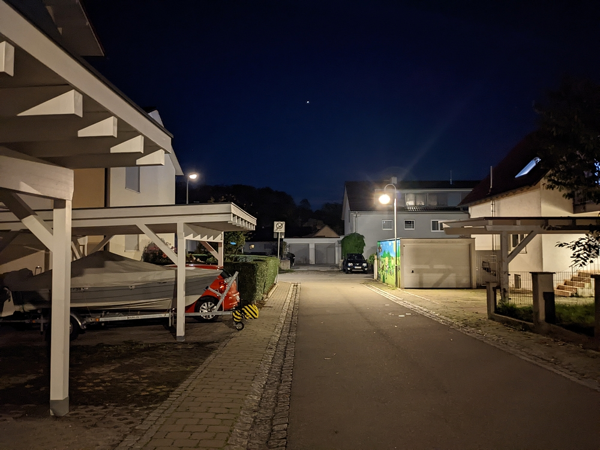
Взгляд назад на наш дом — последний справа, с фонарём и яркой картинкой на сарае.
У Марины мы сидели долго, часов до десяти вечера, пока Ане не стало пора спать. Ели салат и пиццу, а я за компанию с Даниэлем ещё и тяпнула немецкого пива (днём Марина меня подбила на сухое вино с газировкой, так что вышел какой-то алкогольный день). Даниэль сказал, что во всём Париже есть один китайский паб, где продаётся правильное пиво — хоть и китайское. Я не шарю, но то что мы пили было определённо ничего. Я из алкоголя люблю пиво и портвейн, но выпиваю очень редко — крышу немного сносит. :)
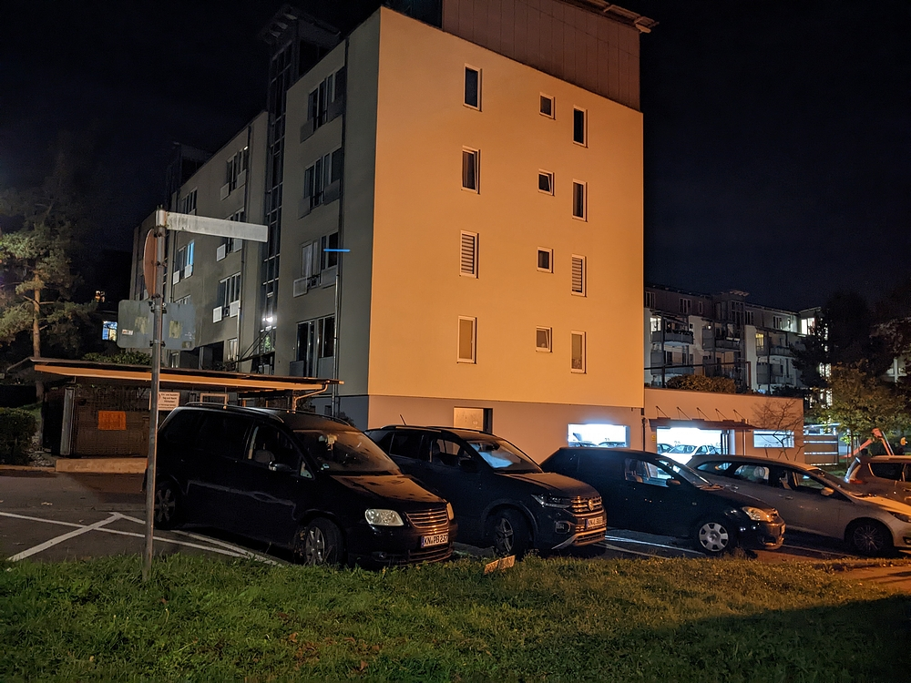
На обратном пути пошли не сразу домой, а прошлись немного по дворам, чтобы размять ноги. После пива лестница на чердак далась мне не так-то просто. :D
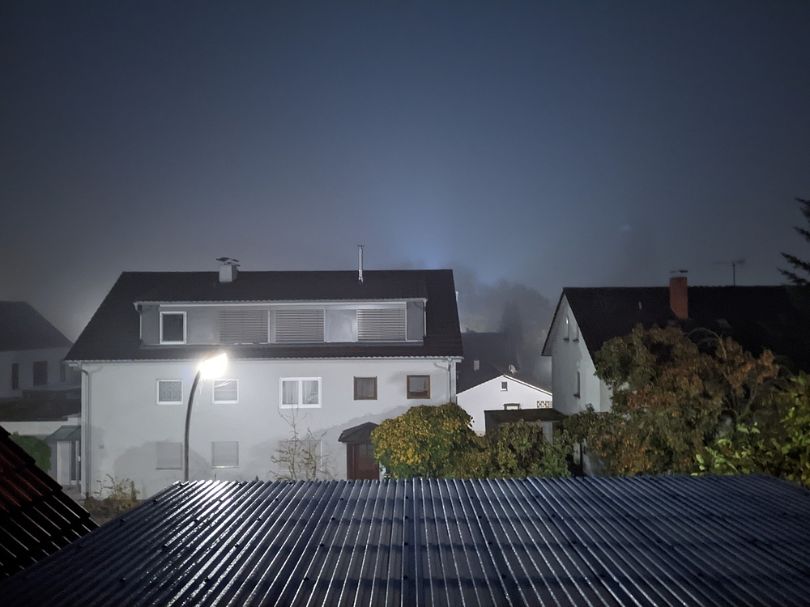
Вид из-под крыши на чердаке где-то на излёте ночи (видимо мы по привычке проснулись ни свет ни заря и решили высунуться в окно, не помню).
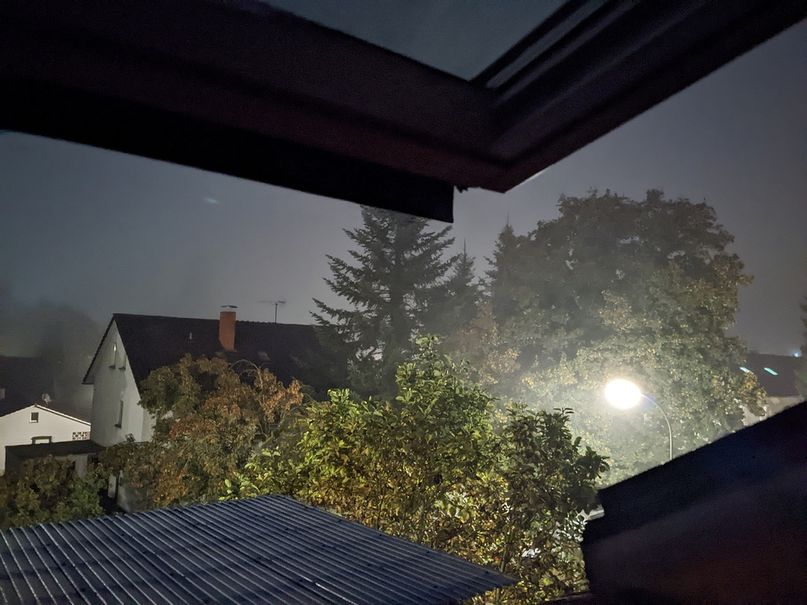
Всё в тумане. Сырой ночной воздух заполонил чердак, и спать больше не хотелось.
16-е октября
Солнце встаёт — вид с нашего балкона на ту же сторону, что и с чердака.

План на воскресенье был такой: Аню оставить с родителями Даниэля, а самим вчетвером рвануть в пеший поход, километров этак десять или пятнадцать, пока не устанем или не станет пора забирать Аню. У Даниэля машина, поэтому не надо было думать, как добираться (а Марина кстати как раз сдала теорию незадолго до нашего приезда, так что скоро тоже будет гонять).
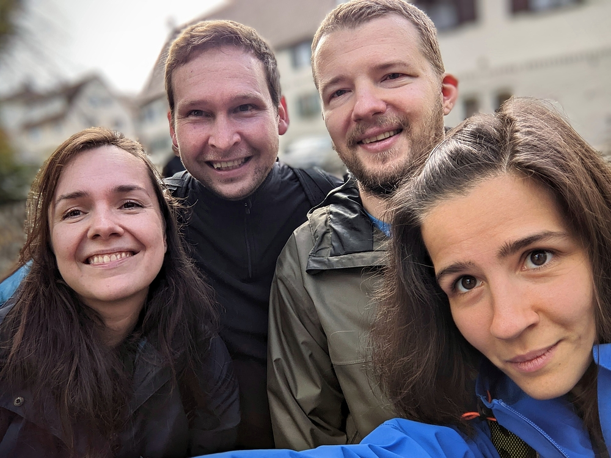
Вот наши радостные четыре лица перед походом. :)
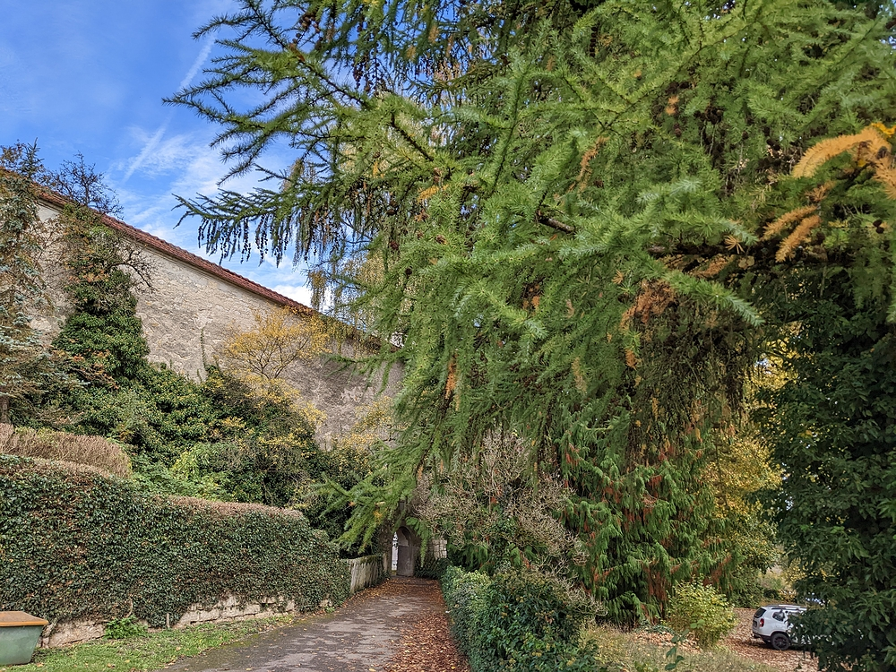
Мы поехали в посёлок Инцигкофен (Inzigkofen) в районе Зигмаринген, в пятидесяти километрах к северу от Констанца. Вообще вся эта область Германии называется Баден-Вюртемберг — по-немецки правильно говорить Land (земля), а вся Германия это Вundesland. Ехали на машине примерно час, и в окно видели Боденское озеро в белом утреннем тумане. Погода с самого утра была отличная: вовсю светило солнце, а днём так и вообще обещали плюс двадцать. Пока шли через посёлок, проходили мимо церкви и здоровенных каменных стен.
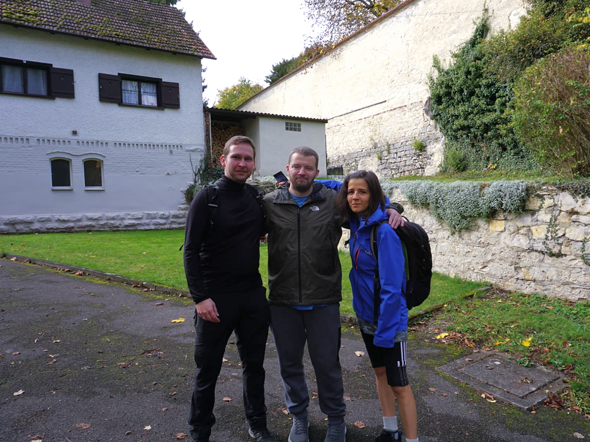
Даниэль, Сергей Анатольич и я в каком-то дворе.
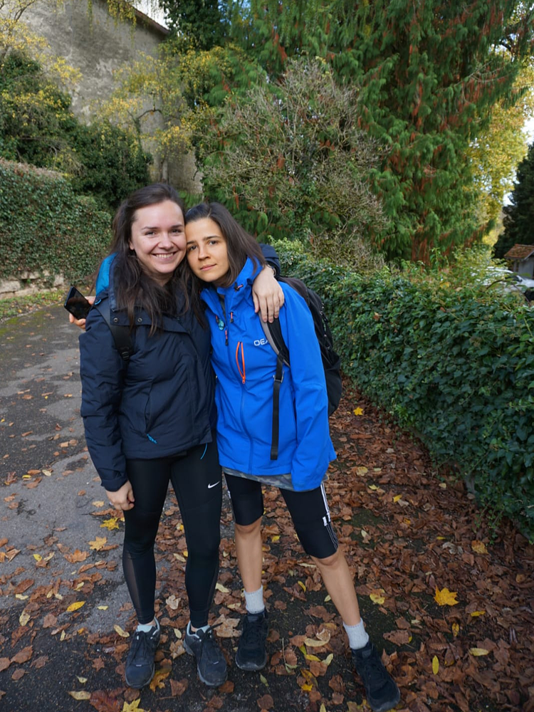
Ну а это мы с Мариной в том же дворе.
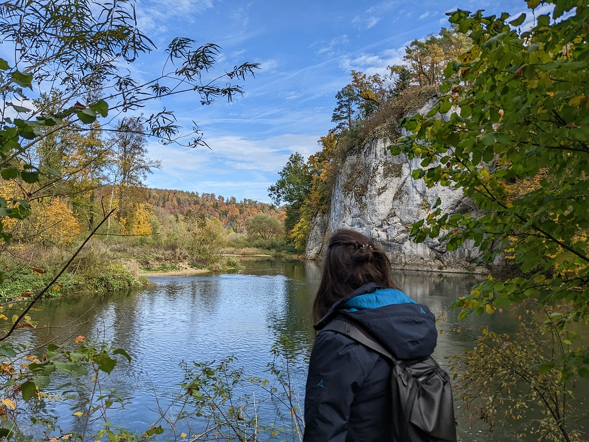
Инцигкофен стоит на изгибе речки Дунай. Вообще, весь наш примерный маршрут виден на карте в самом начале поста: Марина с Даниэлем там один раз были, а мы с Сергей Анатольичем даже не представляли, что нас ждёт. Первым делом мы увидели здоровенную скалу, покрытую лесом. Красота! К скале прилагалась легенда о прекрасной деве, которая сиганула вниз с обрыва и покончила с жизнью (правда, тут же уточнялось, что на самом деле упомянутая дева благополучно дожила до седых волос — но легенде это никак не мешает).
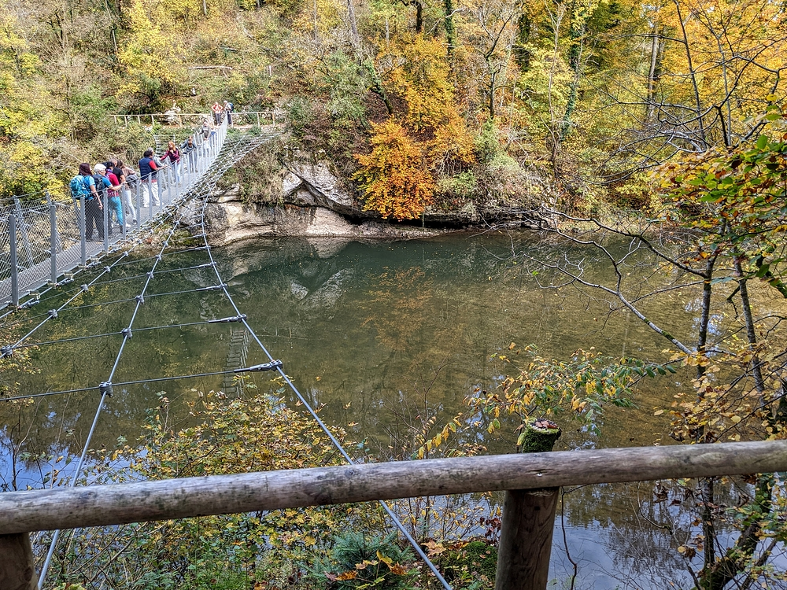
Рядом со скалой переправа через Дунай — подвесной мост из стального троса, похожий на здоровенную серебряную паутину. Желающих перебраться было много (и некоторым из них было совсем мало лет), так что мы выстроились в очередь. Со стороны казалось, что люди балуются и специально раскачивают мост. Но когда дело дошло до нас, было уже не так смешно: мост действительно шатало из стороны в сторону, и мобила чуть было не последовала примеру прекрасной девы из легенды. М-да, канатоходец из меня не очень!
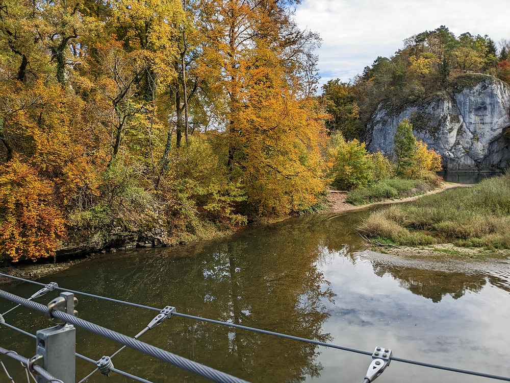
Вид с моста на скалу. Дунай тут очень классно завихряется и расщепляется, огибая всякие островки.
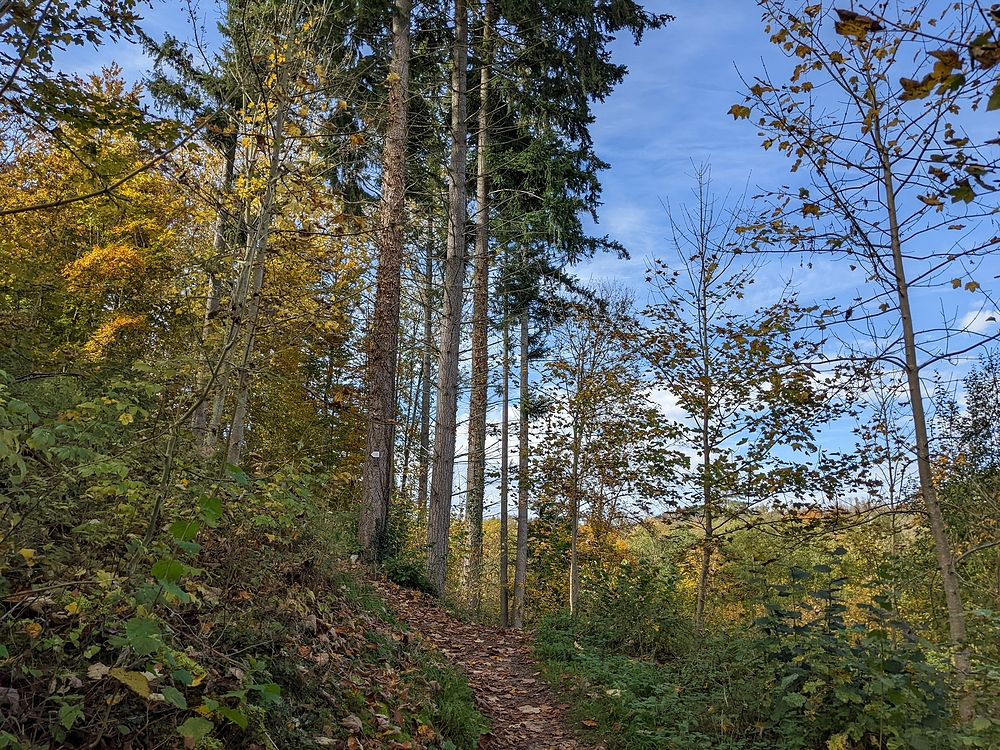
На другой стороне сразу начался подъём по лесной тропе на вершину скалы. Подниматься не очень долго, и тропа завалена опавшими листьями — ноги приятно пружинят. Очень скоро я переодела носки на более лёгкие и затолкала куртку в рюкзак. Было по-летнему тепло и хорошо, что-то вроде +20.
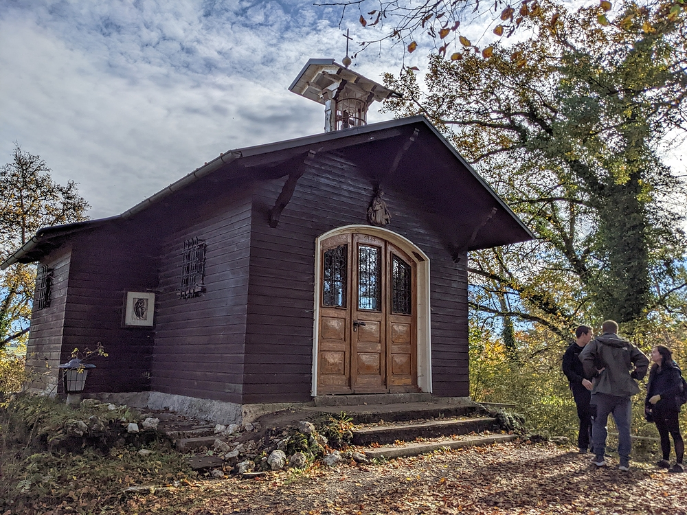
На самом верху горы — маленькая деревянная церковь. Мы зашли на неё посмотреть, а потом вернулись и продолжили путь по лесу.

В какой-то момент вышли на дорогу, где совсем недавно положили новый асфальт. За маршрутом следил Даниэль, а мы все отдыхали и болтали.
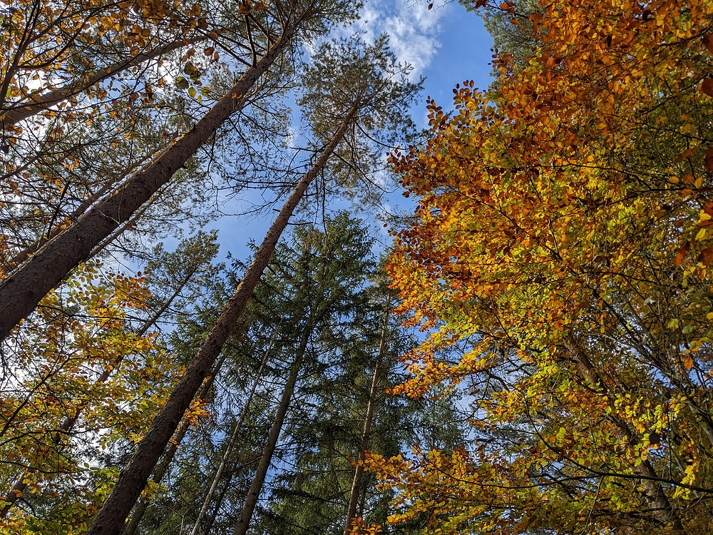
Мы перешли дорогу и снова углубились в лес. Деревья тут здоровенные, высокие и стройные, не то что в UK.
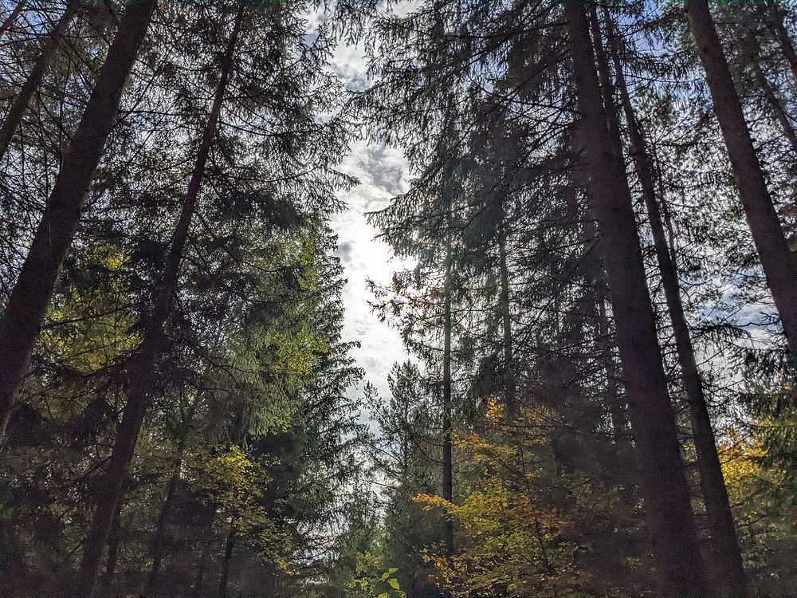
Сосны прямо взмывают в небо. Я уже и забыла, что бывают такие деревья — а не только скрюченные коряги со скошенной на бок от ветра шевелюрой. :)
Гигантский лист какого-то куста среди своих мелких собратьев.
Мы продолжали подниматься, и через какое-то время вышли на белый утёс над обрывом. Внизу под ним дорога, которую мы переходили, и чуть дальше — изгиб Дуная. Тут было особенно красиво, и мы какое-то время постояли, обозревая просторы. Чуть дальше в скале была нехилая щель — можно было перебраться через неё на самый край утёса, но я решила не подавать плохой пример (да и страшновато было).
Марина на краю утёса смотрит на даль (хотя судя по выражению лица, скорее на Даниэля с Сергей Анатольичем).
Марина с Даниэлем на фоне немецких просторов. Сзади какой-то экстремальный старикан лезет на самый край обрыва, куда я не решилась. :)
Мы с Сергей Анатольичем на фоне немецких просторов. Кажется, что мы немного заснули. :D
Я как Шарик, начинаю фотоохоту со своим верным андроидом (который я кстати день назад расколотила об угол бордюра, но не фатально).
Мы пошли дальше, и в лесу всё чаще стали попадаться грибы. По большей части сыроежки, здоровенные и разноцветные. Поначалу я никак не могла понять, откуда в лесу такой сильный запах — а потом вспомнила, что это запах грибов.
Какое-то время дорога шли по золотистому подлеску, из которого торчали одинокие длинные сосны. Солнце припекало — стало даже жарко.
Сергей Анатольич с Даниэлем вырвались немного вперёд, а мы с Мариной нагоняли их сзади. За разговором километры проматываются незаметно.
Места там просто потрясающие — особенно мне нравятся эти сухие торчащие сосны.
Из лиственных очень много буков, если не ошибаюсь.
Из подлеска мы снова углубились в лес и начали спускаться. Золотистые кроны закрыли нас от прямого солнца, как витражи.
Потом мы попали в сосновый лес. Под ногами — мох и бурелом, и очень много грибов.
Под громкий смех Марины с Сергей Анатольичем я пофоткала наиболее выдающиеся грибы. :D

Вот например, у этого гриба в шляпе целое озеро. Как можно такое не сфоткать?
А этот — наверное, самый аккуратный гриб на поляне. Сидит себе во мху и в ус не дует.
Сосны меня впечатляют. Они создают такой классный свет — кажется, что раздастся космическая музыка, и из-за деревьев выйдут толкиеновские эльфы. Могу только догадываться, как тут красиво ночью — столько звёзд, что иголке некуда упасть, и виден Млечный Путь.
Вот ещё немного сосен. Как поётся в песне Rammstein:
Ich werde in die Tannen gehen
Dahin wo ich Sie zuletzt gesehen
Doch der Abend wirft ein Tuch aufs Land
und auf die Wege hinterm Waldesrand
(Пойду я в сосны, где в последний раз тебя видел. Вечером туман наползает на землю, и на тропинки за опушкой леса.)
Мы спустились по крутой лесной тропе — приходилось цепляться за ветки и долго думать, куда наступить. Листья тут и мешают, и помогают: падать мягче, но зато не видно, где ямы. Внизу мы с Мариной нашли дикую яблоню и нарвали с неё штук десять яблок. Они были классные, кисло-сладкие, даром что мелкие. Какое-то время шли по берегу реки, а потом вышли к утёсу.
На дороге встретились грибы в виде маленьких потрескавшихся шаров. Не знаю, как называются, и вообще съедобные они или нет.
Потом снова полезли вверх. С утёса открылся вид на даль — на лес и скалы с другой стороны реки. Ещё тут виден уступ слева, откуда сделана следующая фотка.
Прямо под нами — пропасть. Внизу серые ленты автомобильной и железной дорог, а чуть правее серебрится Дунай.
Фотка прямо как с дрона — как будто мы летим на крыльях над землёй. Мне особенно нравится, как чётко видны тени деревьев.
Со скалы мы слезли вниз, на дорогу. Я уже думала, что это конец нашего путешествия — но главная красота была ещё впереди.
Мы опять свернули в лес и полезли на горку. На краю утёса была небольшая дубовая роща и смотровая площадка со скамейкой.
Потом пошли совсем необычные места: что-то наподобие пещер в скалах. Сергей Анатольич с его зелёной курткой мог бы замаскироваться под кусок скалы.
Мы продолжали подниматься, и пещеры становились всё более серьёзные. В некоторые из них можно было бы попытаться залезть, но желающих не нашлось. :)
Всё чаще стали попадаться деревянные лестницы, заваленные опавшими листьями. Мы лезли по ним то вверх, то вниз, огибая очередной утёс.
Местами лёгкие деревянные мосты проброшены с одной скалы на другую, а под ними пропасть.
И всё время перепады высот: только что этот указатель на фотке нависал над нами, и вот он уже остался внизу.
Головокружительная красота. Неяркий косой полусвет через кроны деревьев где-то на высоте. :)
Некоторые лестницы как бы утоплены в землю (лежат на горе), а некоторые просто висят в воздухе. Поднимаешься по ступенькам, а под ними пропасть.
Вооон на тот помост мы сейчас полезем!
Мы шли через пещеры минут двадцать, а потом деревянная дорога обогнула скалу слева и вывела нас к каменному мосту высоко над Дунаем.
Вид сверху на Дунай и скалы. Кажется, мы видели этот мост на верхотуре с одной из смотровых площадок. :)
Потом мы ещё полчаса шли по лесу и возвращались назад в Инцигкофен. Перевалило за пять часов вечера, но у Ани с родителями всё вроде как было хорошо. Даниэль с Мариной предложили поехать назад в Констанц и поесть в их любимом китайском ресторане. Мы с Сергей Анатольичем были только за (руками и ногами), потому что к тому моменту намотали уже километров пятнадцать, и все успели устать и проголодаться (хотя мы-то с Мариной тяпнули диких яблок по дороге).
В Констанц доехали с небольшим приключением — дорогу перекрыли из-за аварии, и пришлось искать объезд. Приехали уже в сумерках, после захода солнца. Даниэль оставил машину на парковке (это не очень далеко от их дома — можно утром забрать), и мы пошли в китайский ресторан через большое асфальтированное поле. Почему-то там стоял снятый с рельсов старый трамвай номер 6.
А вот и китайский ресторан! Вход в него справа, под лестницей. Там же неподалёку мы обнаружили 24-часовой автомат с едой: наподобие обычных будок с кока-колой и сникерсами, только в этом продаётся много нормальной еды: можно купить мешок яблок или пакет овощей. Так значит, всё-таки можно было затариться едой ночью в пятницу, просто никто из местных про этот автомат не знает! Надо констанцевскому отделу туризма расклеивать рекламу этого автомата по городу. Ну или указатели поставить: еда там! :D
Внутри китайского ресторана всё из красноватого полированного дерева, и по стенам развешены красные китайские фонарики. На каждом столе горит свеча на подставке из прямоугольного стеклянного кристалла с иероглифами, а ещё стоит горка свежих розовых салфеток. Первым делом нам принесли стопарики со сливовой настойкой: один глоток, чтобы согреться с улицы. Ещё спросили, что мы будем пить — вообще там платишь стандартную таксу за вход, а дальше можно набирать сколько угодно еды и по многу раз. Только за выпивку надо платить отдельно.
Мы оставили вещи и пошли набирать еду: там был длинный буфет с горячей едой, и ещё один с сырыми ингредиентами: кладёшь что хочешь на тарелку, цепляешь к ней прищепку с номером стола и несёшь на гриль — это всё прямо на месте поджаривают и приносят. Ещё было несколько дополнительных буфетов с эклерами, апельсинами, и главное — штук десять лотков с разными видами мороженого (было даже ярко-синее, которое мы не преминули попробовать). Даниэль ел свой любимый суп. Было очень вкусно — и главное, каждый мог взять, что хотел. Под конец, когда мы уже расплатились и собрались уходить, принесли ещё раз всем по стопарику сливовой настойки. Здоровский ресторан!
Прощальный сытый взгляд на китайские фонарики.
17-е октября
Последний наш день в Констанце! Понедельник.
Утро началось с густого белого тумана, через который не пробилось даже солнце.
На кустах и столбах — серебряная паутина. Раньше мы её не замечали, но от тумана она покрылась каплями воды и стала похожа на воздушные замки.
По дороге к Марине мы каждый день проходили мимо одинокой розы, и в тумане она была особенно холодная и свежая.
С утра Аня была в садике, и мы долго вчетвером сидели на Штайнхартштрассе — завтракали и смотрели фотки из прошлых походов. Ближе к часу пошли забирать Аню.

К этому времени совсем распогодилось: солнце светило во всю, и от утреннего тумана не осталось и следа. До садика идти минут двадцать – двадцать пять. Марина пошла вперёд: делегации из четырёх взрослых на одного ребёнка в сад не пускают, и мы втроём остались подождать на улице.
По дороге к саду проходили стройку с бетономешалкой и краном.
Сам по себе сад на удивление тихий — в Лондоне детские сады слышно за квартал, а про этот я бы и не догадалась, если бы не дорожный знак. На фотке сад справа, а слева Маринина работа (может не именно этот дом, а соседний — не помню). Сад достался Марине по работе: есть другие поближе к дому, но они все забиты. Минут через десять вышли Марина с Аней, и мы разделились: Даниэль повёз Аню домой к родителям, а мы втроём пошли гулять по Констанцу.
По дороге проходили мимо дома, куда недавно переехала работа Даниэля — он стоит почти на набережной Рейна.
Что мне нравится, так это бетонные петли мостов через автобан. У нас в Кройдоне тоже есть такие, только намного меньше, на парковке возле станции. Иногда мне снится город-над-городом из таких бетонных переходов на уровне крыш.
Мы дошли до набережной Рейна — он абсолютно чистый и прозрачный до самого дна — и долго сидели на бортике у воды, болтая ногами. Припекало солнце и было очень хорошо — я даже не помню, зачем мы оттуда ушли. Марина спалила Сергей Анатольичу все мои грехи молодости, вроде ярко-красной помады, которой я как-то злоупотребила в школьные годы. А я-то старалась, рассказывала Даниэлю как она хорошо училась и участвовала в олимпиадах по математике. :D
Потом мы всё же оттуда ушли — пора было идти гулять по городу — и пошли дальше к мосту через Рейн. Мостов там несколько, но мы пошли на один пешеходно-велосипедный, который ведёт в старый город. На фотке взгляд с моста на запад, откуда мы пришли, и откуда нас должен был вскоре догнать Даниэль. Он всё никак не звонил — наверное, у него опять поломался андроид. Там какая-то хитрая поломка, и телефон то и дело самовольно выключается. Такие дела — куда я ни иду, везде у людей ломаются телефоны, а я профессионально ничего не могу с этим сделать. Глянула мельком на логи, но без бутылки не разберёшься.
А это вид на восточную сторону моста, откуда виден следующий мост, а за ним огромное Боденское озеро. На самом горизонте едва различимые на фоне неба Альпы.
Исторический центр Констанца — что-то вроде Троицкого Предместья в Минске. Много ярких домов со старыми ставнями. Через улицу протянуты гирлянды с шарами цветов.
Квадратная плитка положена красивыми дугами.
Храм. Он ещё раз в сто красивее, чем на этой фотке — но на другие фотки закрался парусиновый ларёк и предательски всё перегородил.
В одном из дворов был фонтан с чешуйчатыми рыцарями и каким-то шутом.
Одна из улиц в старом городе. Мне понравился журавль на доме. :)
К тому времени Даниэль нас догнал (у него и правда опять отрубился телефон), и мы пошли в кафе. По дороге Марина с Сергей Анатольичем чуть не подбили меня купить меховые тапки, но я всё-таки устояла: хватит с меня тех, что купили вчера. В кафе мы выбрали стол на улице — было хорошо и не холодно. Каждый взял, что хотел: Марина — шоколадный торт, я — белый воздушный торт с вишней, Даниэль — вишнёвый пирог, а Сергей Анатольич — салат с редькой.
Назад шли вдоль залива. До горизонта — Боденское озеро, а за ним едва угадываются горы на другом берегу.
По дороге домой проходили мимо станции Констанц-Петерхаузен, с которой нам завтра утром уезжать.
Там же неподалёку школа, где учился Даниэль (зелёное здание справа на фотке).
Потом мы забрали Аню у родителей Даниэля и пошли к Марине домой прожигать остаток вечера. На фотке вид с Марининого балкона на уходящее солнце. Аня уже нас не боялась, и мы долго играли в игру с кусачей мышью, которая сопела и пряталась под ковёр. Мы с Даниэлем распили ещё одно пиво. Перед уходом договорились, что завтра утром они зайдут за нами и проводят до станции, так что прощаться к счастью было ещё рано. :)
18-е октября
Утро с нашего балкона.
Мы встали пораньше, чтобы всё привести в порядок и выбросить мусор (тут в Германии ещё более строгие правила, чем в UK, и мы не с первого раза разобрались, что в какую мусорку выкидывать). Фабиан распечатал для квартирантов подробную инструкцию, и там был список, что надо сделать перед отъездом. Это очень упростило нам жизнь: можно было просто пройтись по списку и не думать. Вскоре мы всё пособирали и завалились на диван, распить последний чай-латте и посмотреть ролик про гусениц.
В одиннадцать пришли Марина с Даниэлем и принесли мне подарок: три пачки морской капусты. Я её очень люблю, а в Кройдоне она не продаётся. Мы показали им хату, посидели минут пятнадцать и пошли на станцию. Вышли даже немного поздновато — успели впритык. По дороге говорили с Даниэлем про школу и всякие олимпиады. На станции какая-то добрая девушка, не говорившая по-английски, помогла нам разобраться с поездом: он ехал до Карлсруэ, и мы не знали, остановится ли он в Оффенбурге. В конце концов девушка, Марина и Даниэль этот вопрос уладили. Через пару минут приехал поезд. Мы обнялись на прощанье, позвали их в село Лондоново и полезли на второй этаж. Потом ещё махали в окно, пока их было видно.
Поезд нёсся вдоль озера в утреннем тумане. Самого озера не было видно — только белое световое облако, за которым смутно угадывались очертания берега.
Мы снова ехали через Шварцвальд — он же Black Forrest, Чёрный Лес. За окном мелькали горы, покрытые соснами и рыжим подлеском, и обрывы, под которыми виднелись крыши домов. Сначала мы удивились, что в поезде днём горит свет, но потом всё прояснилось: поезд то и дело заезжал в туннель. Несколько раз мы видели развалины старых замков на скалах, а далеко внизу мелькали ленты автомобильных дорог. Заснять это всё опять не получалось: через мгновение долина скрывалась из виду, и на фотках отражались то колени, то пальцы, то ещё какая-то ерунда. Та же самая девушка, которая помогала нам на платформе, показала знаками, чтобы мы одели маски: приближался контролёр, а у них тут видимо обязательно ездить в маске.
Пару наименее неудачных фоток я всё же оставила: тут не видно долину, только деревья на краю обрыва, но думаю что вы представите всё остальное.
Пришла пора собирать манатки — мы были уже почти на Оффенбурге, и пора было спускаться на первый этаж. Я вспомнила, как по-немецки поблагодарить девушку: vielen Dank!
Мы спрыгнули с поезда, и я на прощанье его сфоткала: вот он какой красивый, двухэтажный.
Дальше в Оффенбурге нас ожидал привет от рабочих-железнодорожников: сегодня по расписанию была забастовка, и наш поезд до Страсбурга отменили. Впрочем, я не знаю — может его отменили по другой причине. Весёлый человек на платформе всем радостно объяснял, что поезда не будет — даже невольно закралась мысль, а не участник ли он забастовки. :D
Ну ладно! Мы пошли искать, кого бы спросить. В конце концов выяснили, что следующий поезд всего через полчаса после отменённого: фух, повезло. Дело в том, что нам надо было успеть на долгий поезд из Страсбурга в Париж. С задержкой на полчаса мы успевали впритык: на пересадке в Страсбурге будет восемь минут, чтобы найти платформу и добежать до вагона. До нашего поезда остался ещё час, и мы пошли пить кофе в квадратном красном кафе и гулять по Оффенбургу.
До Страсбурга доехали хорошо, правда поезд был забит и на пару минут опоздал. У нас осталось всего минут пять, и мы как угорелые понеслись на соседнюю платформу — там уже стоял знакомой расцветки поезд до Парижа. Успели как раз вовремя: залезли в вагон, и через пару минут состав тронулся. До Парижа ехали без приключений: ели сухую немецкую колбасу и зерновой хлеб. За окном было солнечно. Мелькали бескрайние зелёные поля до самого горизонта. Один раз видели жёлтый воздушный шар. :)
В Париж приехали уже к вечеру. У нас снова было часа четыре до следующего поезда, и мы пошли гулять по городу. На этот раз подальше от центра — в противоположную сторону. Там как раз был на карте какой-то канал — меньше, чем Сена, зато гладкий как зеркало и зелёный. Снова много граффити, и характерная розовато-серая плитка на набережной.
Мы шли вдоль канала, проходя один мост за другим. Такой Париж нравился мне больше.
Потом дошли до здоровенного детского парка с аттракционами, закрытого на ночь. Там было много красивых штук, вроде огромного макета насекомого с ажурными крыльями, зеркального шара размером с планетарий или каких-то странных металлических лилий на воде — но самое характерное, это плитка. Она классная, серо-розово-голубая, цвета вечернего неба. Как-то в прошлый раз нам попадался один асфальт.
Пора было уже заворачивать назад, к вокзалу. Мы завернули возле трамвайных путей и пошли для разнообразия не вдоль речки, а вдоль улицы. Потиху темнело.
Мы шли по какому-то — не побоюсь этого слова — бульвару, то есть по такой дороге, где в центре пешеходная зона с травой и деревьями. Как раз зажглись фонари, и стало по-вечернему красиво. Очень понравился по архитектуре этот странный дом на фотке с шестигранными окнами и нависающими балконами. По дороге мы зашли в магаз за едой: Сергей Анатольич увидел большой супермаркет той самой сети Monoprix, в котором был хороший кофе и продавщица мыла нам яблоки на вокзале в Страсбурге. Магаз оказался здоровенный, и мы набрали там целый мешок яблок, хурмы и апельсинового сока. Ещё и пару тех самых фруктовых батончиков, которые спасли нас от голода.
Потом шли на вокзал по ночному Парижу. Ближе к центру как всегда было много людей и чувствовалась нездоровая движуха: кто-то чем-то приторговывал, кто-то был пьян, кого-то под локти вела полиция. Нагловатого вида паренёк предложил мне пакован сигарет — видимо, купить. Шли над железнодорожными развязками, ведущими на вокзал Gare de l’Est (Париж-Восточный). Наш вокзал немного дальше — Gare du Nord (Париж-Северный).
По дороге проходили душераздирающий мост, под которым лагерь беженцев. Тут стоят палатки и живут люди: молодые и старые, каждый со своей разбитой жизнью, про которую можно было бы написать целую книгу. Мы не знаем, как они сюда попали — у каждого бродяги своя история, как в грустном анимэ Могила Светлячков. Вроде Сергей Анатольич вычитал, что для них строится новый более удобный лагерь.
Gare du Nord, наш северный вокзал с сотнями огней и железнодорожных развязок.
Здесь заканчивается фотоотчёт — дальше мы пошли проходить паспортный контроль и мыть яблоки под вредным краном, который зажилил воду и не хотел открываться. Потом весело ехали на поезде и жевали остатки хлебцов с апельсиновым соком. Домой завалились уже за полночь, но я всё-таки успела приложиться к морской капусте. :)
comments powered by Disqus